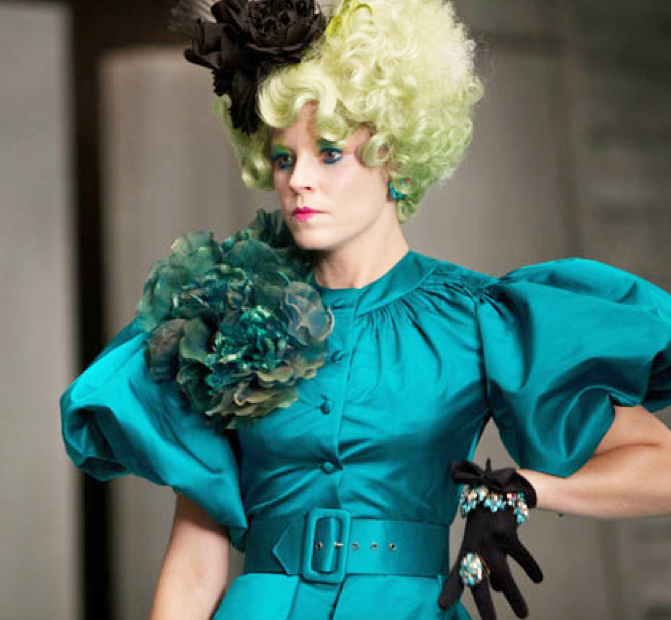

Here is a list of main characters in the Hunger Games trilogy:
Here is a list of supporting characters in the Hunger Games trilogy:
Well known in District 12 for her hunting skills, Katniss has an overwhelming instinct to protect the people she loves, and a strong will to survive. When her young sister is chosen for the Hunger Games, Katniss volunteers to take her place. The same skills and stubbornness that helped save Katniss's family from starvation after her father's death enable her to survive in the arenas in The Hunger Games and Catching Fire. Eventually, she joins the rebels' resistance, where her hatred of the Capitol turns her into one of the rebels' most powerful weapons in Mockingjay.
The son of a baker, Peeta Mellark is a charismatic and kind boy with an innate gift for communication and persuasion in The Hunger Games. Believing he stands no chance of winning the Games, he decides to do whatever he can to help Katniss Everdeen, whom he has loved from afar since kindergarten. Helping and supporting Katniss becomes the focus of Peeta's life until the Capitol hijacks his memories of her, and brainwashes him into becoming the government's mouthpiece. Fighting through his altered perceptions, he holds to his promise to always stay with Katniss.
Skilled at trapping, Gale Hawthorne is Katniss Everdeen's match in temperament and background. He hunts with Katniss to provide for his family after his father is killed. He hates the Capitol and eagerly hopes for an uprising. When the Capitol firebombs District 12, Gale leads several hundred of the residents to safety. He quickly becomes a rebel leader in District 13, where his thirst for revenge unleashes a darker, more vicious side of his personality in Mockingjay.

Haymitch is a fascinating character, and readers' perceptions of him change throughout the series. At first appearing to be no more than a worthless drunk, his flaws are eventually revealed to be the result of the unimaginable pain, loss, despair, and self-loathing he experienced in order to become a victor in one of the Quarter Quells, which occur every 25 years. But he is also shrewd and very intelligent, coaching Katniss throughout the 74th Games and secretly working with the rebel resistance to bring down the Capitol in both Catching Fire and Mockingjay.
Effie Trinket is the schedule-obsessed chaperone of the tributes from District 12. Despite her Capitol manner, she does whatever she can to support Katniss Everdeen and Peeta Mellark in all three books. She is known for her outrageous outfits and her famous phrase "And may the odds be ever in your favour."
Snow is one of the most frightening figures in the series. He is deceptively well-mannered and immaculately dressed, but Katniss often compares him to a snake. She also vividly describes how the enhanced fragrance of the white roses Snow wears mix sickeningly with the smell of blood on his breath. Snow has been president of Panem for years, and although he may originally have worked to maintain order in the nation, that impulse has been replaced by his own "hunger" for absolute power and a willingness to do anything to retain it. He warns Katniss he will kill her friends and family if she does not help suppress the growing unrest in the nation. By the end of Mockingjay, though, Snow becomes a prisoner in his own mansion, waiting to be executed by the rebels.
Prim is not seen through much of The Hunger Games, but she is the catalyst for much of what happens, the voice of kindness and compassion, and the force that drives Katniss. Katniss's love for Prim is what causes her to volunteer for the Hunger Games, and Rue's resemblance to her sister gives her hope during the Games themselves. Prim herself grows stronger and braver as events unfold, even taking on the duties of medic so she can help others. Her death at the end of the series—where she becomes a "human torch" when the Capitol is bombed by the rebels—sends Katniss into a black despair from which she never entirely recovers.
Finnick first appears in Catching Fire as the handsome and charismatic former victor from District 4, who has the reputation as a smooth talker and ladies' man. During the Quarter Quell, however, he reveals himself to be skilled, intelligent, and loyal, helping ensure both Katniss and Peeta's survival. Readers also learn in Mockingjay that far from being a ladies' man, he has loved only one woman—a girl named Annie Cresta, who was mentally and emotionally broken during her own time in the Games. He was also "sold" by the Capitol to various citizens, but turned the humiliation to his advantage by learning secrets about the people there, including the fact that Snow poisoned anyone who stood between him and the power he sought. Finnick has a brief moment of happiness when he eventually marries Annie, but unfortunately he is killed in the sewers in Mockingjay as he and the Star Squad fight their way to the Capitol.
Johanna Mason is the angry former victor from District 7 in Catching Fire. She suffers from the mental and physical effects of the Capitol's torture in Mockingjay, but slowly recovers as she recognizes a kindred spirit in Katniss Everdeen.
Cinna is Katniss' stylist for the Games. He is gentle and kind, and, in the early stages, one of the few people she trusts on her team. He helps realize Haymitch's unified front strategy by dressing Katniss and Peeta similarly. He also devises the "fire" theme that distinguishes Katniss as "the girl who was on fire."
They are Katniss' prep team for the Games, responsible for making her presentable (hygiene, make-up, etc.). They are a flamboyant and vacuous bunch, and while not outwardly antagonistic, represent the superficial nature of the Games.
Portia is Peeta's stylist for the Games. She works along side with Cinna.
The team of Capitol representatives responsible for designing the arena and manipulating it for entertainment effect. They are described as robed, privileged, and uninterested in the well-being of the tributes whose deaths they control.
He is the interview host for Games-related broadcasts. He maintains an image of perpetual youth through plastic surgery. An extremely affable fellow, Katniss notes how he makes his interview hosts feel at ease, a great irony since his job is to celebrate the brutality nature of the Games.
He is the announcer for the Hunger Games, described by Katniss as "legendary." His voice announces information to the tributes as they play, as well as narrating for the television audiences.
Plutarch Heavensbee is the scheming Head Gamemaker who is secretly working to bring down the Capitol in Catching Fire and Mockingjay.
President Alma Coin is the cold, calculating, and authoritative leader of District 13 in Mockingjay. She leads the rebellion to take over the Capitol, and becomes the new president of Panem. When she suggests that as revenge, Panem has one final Hunger Games but with the Capitol's children, Katniss realizes that she's just as evil as Coriolanus Snow. During Snow's supposed execution, Katniss shoots an arrow at Alma Coin instead.
 HTML Validated
HTML Validated